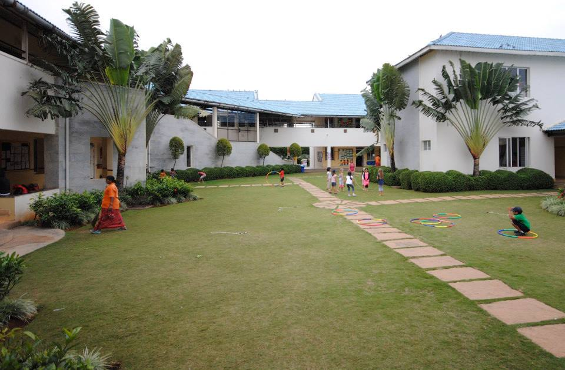
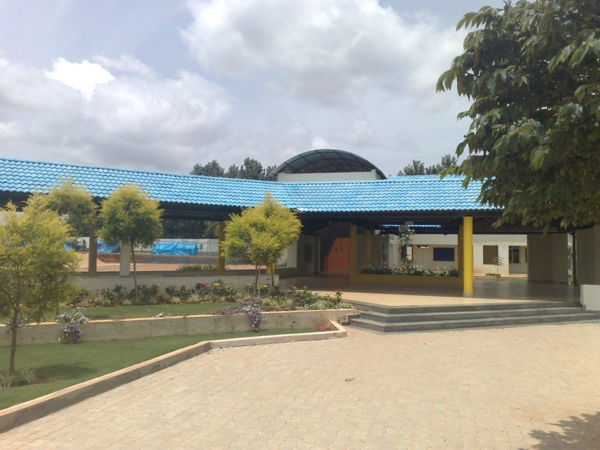
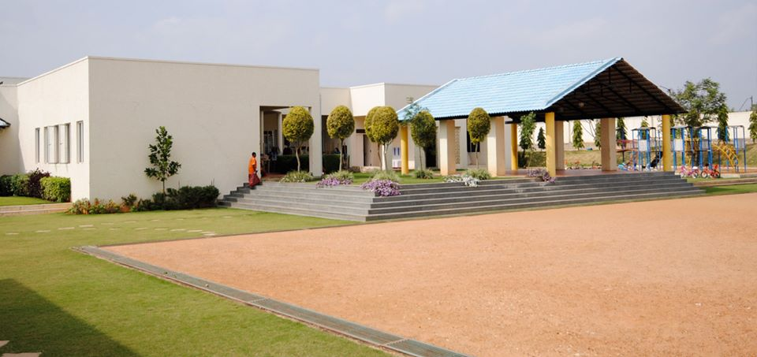
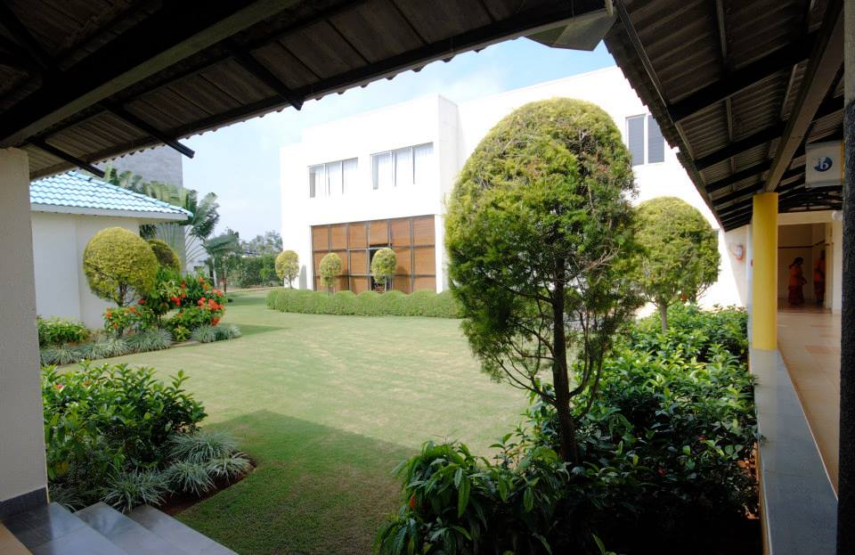
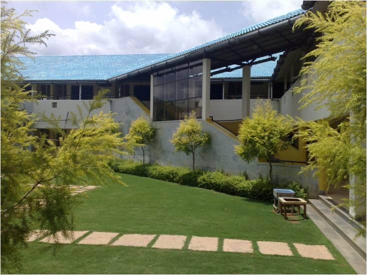

Canadian International School

This prestigious residential school, nestled within a sprawling 14-acre campus in North Bangalore, offers comprehensive education following the Canadian syllabus to a diverse student body of approximately 600 learners. The institution stands as a testament to modern educational architecture, featuring not only state-of-the-art academic facilities but also well-appointed residential accommodations that create a true home away from home for its boarding students.
The impressive campus boasts an extensive built-up area spanning 2.5 lakh square feet, thoughtfully designed to accommodate both academic and residential needs while maintaining a harmonious balance between functionality and aesthetic appeal.
In a unique architectural detail that exemplifies our commitment to customization and brand identity, we undertook a special collaboration with Lafarge to develop a bespoke blue Mangalore tile. This custom-created roofing solution was specifically designed to perfectly complement the school's distinctive logo, creating a visual cohesion that extends from the institution's branding to its physical structure.






